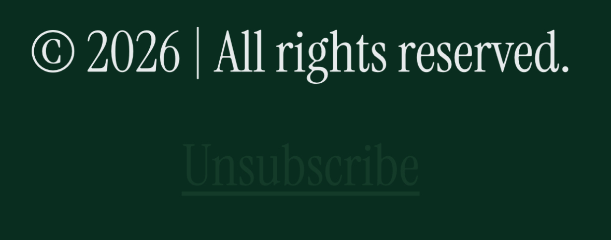
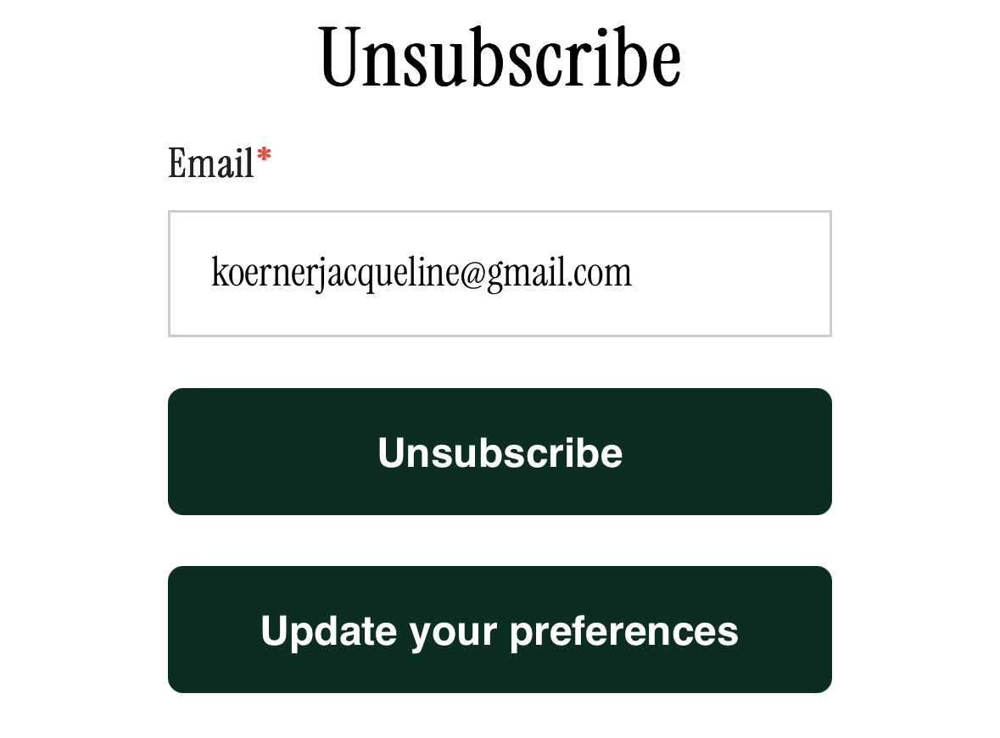
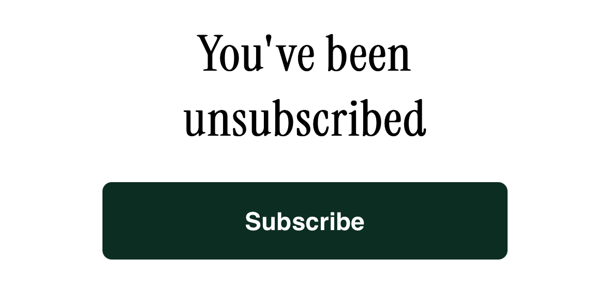
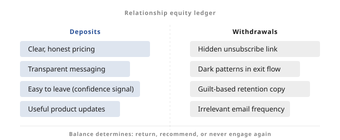
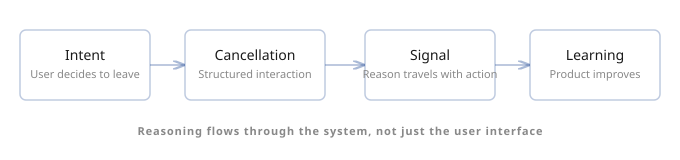

The unsubscribe link was technically there, but it took a second look to confirm it existed
It sat at the bottom of the email in tiny text, colored just close enough to the background that it almost disappeared. I had bought the board game during the holidays as a gift for my family and it turned out to be a huge hit. The company only sells this one game and its expansion pack, and I already owned both, so the marketing emails no longer served much purpose.

The unsubscribe link, technically present.
Once I clicked it, the experience changed completely. The unsubscribe page asked for my email and offered two buttons, unsubscribe or update your preferences. One click later the process was finished.


For something the company clearly did not want me to do, they made it surprisingly easy once I found it. The friction was not in the process itself. It was in discovering that the option existed.
When someone decides to stop using a product they are providing the clearest signal they ever will about its value. They have experienced the system long enough to form expectations, and something about the relationship no longer works. That moment contains information about what changed, what was missing, or what was no longer useful.
Many products treat this moment as something to suppress rather than understand. The goal becomes delaying the decision instead of learning from it. A hidden unsubscribe link does not make leaving impossible. It simply makes it inconvenient enough that some people postpone the task and remain on the list longer. In the short term this works. In the long term it prevents learning.
In healthy relationships endings produce clarity. People explain what worked and what did not. In less healthy ones they disengage quietly because the conversation feels pointless. Products create the same dynamic. When leaving feels adversarial, people conserve energy and exit silently.
Every interaction between a product and its users accumulates trust or withdraws from it. Clear pricing builds trust. Honest messaging builds trust. Making it easy to leave also builds trust because it signals confidence that people will return if the product continues to deliver value.
Friction in the exit flow does the opposite.
Over time these interactions function like a ledger. The balance determines whether someone returns later, recommends the product to a friend, or decides never to engage again.

The relationship equity ledger.
This dynamic becomes even more visible as agents begin acting on behalf of users. A person might postpone unsubscribing because it requires locating the link or navigating settings pages. An agent executing a user's intent will simply perform the action immediately. What appears today as retention may simply be delay.
More importantly, unless systems are designed to capture it, agents will leave without explaining why. Instead of thinking about cancellation as a final screen in a user interface, it can be treated as a structured interaction between systems where reasoning travels with the action.
POST /subscription/cancel
{
"reason_code": "already_purchased",
"confidence": 0.92
}
Intent, cancellation, signal, learning.
Even simple signals such as cost, lack of use, or missing capability would dramatically improve how quickly products learn. Cancellation is not just the end of a relationship with a system. It is a moment where the system can understand what it failed to provide and what might be built differently next.
The systems that improve fastest are the ones that learn from their breakups.